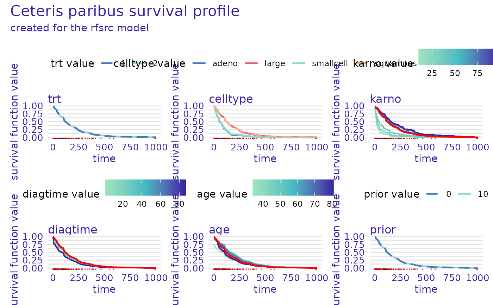

Plot Predict Profile for Survival Models
Source:R/plot_predict_profile_survival.R
plot.predict_profile_survival.RdThis function plots objects of class "predict_profile_survival" - local explanations
for survival models created using the predict_profile() function.
Usage
# S3 method for predict_profile_survival
plot(x, ...)Arguments
- x
an object of class
"predict_profile_survival"to be plotted- ...
additional parameters passed to the
plot.surv_ceteris_paribusfunction
Value
A grid of ggplot objects arranged with the gridExtra::grid.arrange function.
Plot options
plot.surv_ceteris_paribus
x- an object of classpredict_profile_survivalto be plotted...- additional parameters, unused, currently ignoredcolors- character vector containing the colors to be used for plotting variables (containing either hex codes "#FF69B4", or names "blue")variable_type- character, either"numerical","categorical"orNULL(default), select only one type of variable for plotting, or leaveNULLfor allfacet_ncol- number of columns for arranging subplotsvariables- character, names of the variables to be plottednumerical_plot_type- character, either"lines", or"contours"selects the type of numerical variable plotstitle- character, title of the plotsubtitle- character, subtitle of the plot,'default'automatically generates "created for XXX, YYY models", where XXX and YYY are the explainer labels
See also
Other functions for plotting 'predict_profile_survival' objects:
plot.surv_ceteris_paribus()
Examples
# \donttest{
library(survival)
library(survex)
model <- randomForestSRC::rfsrc(Surv(time, status) ~ ., data = veteran)
exp <- explain(model)
#> Preparation of a new explainer is initiated
#> -> model label : rfsrc ( default )
#> -> data : 137 rows 6 cols ( extracted from the model )
#> -> target variable : 137 values ( 128 events and 9 censored ) ( extracted from the model )
#> -> times : 94 unique time points , min = 1 , mean = 119.9706 , max = 845.56
#> -> times : ( generated from y with method quantiles )
#> -> predict function : sum over the predict_cumulative_hazard_function will be used ( default )
#> -> predict survival function : stepfun based on predict.rfsrc()$survival will be used ( default )
#> -> predict cumulative hazard function : stepfun based on predict.rfsrc()$chf will be used ( default )
#> -> model_info : package randomForestSRC , ver. 3.1.1 , task survival ( default )
#> A new explainer has been created!
p_profile <- predict_profile(exp, veteran[1, -c(3, 4)])
plot(p_profile)
p_profile_with_cat <- predict_profile(
exp,
veteran[1, -c(3, 4)],
categorical_variables = c("trt", "prior")
)
plot(p_profile_with_cat)

# }